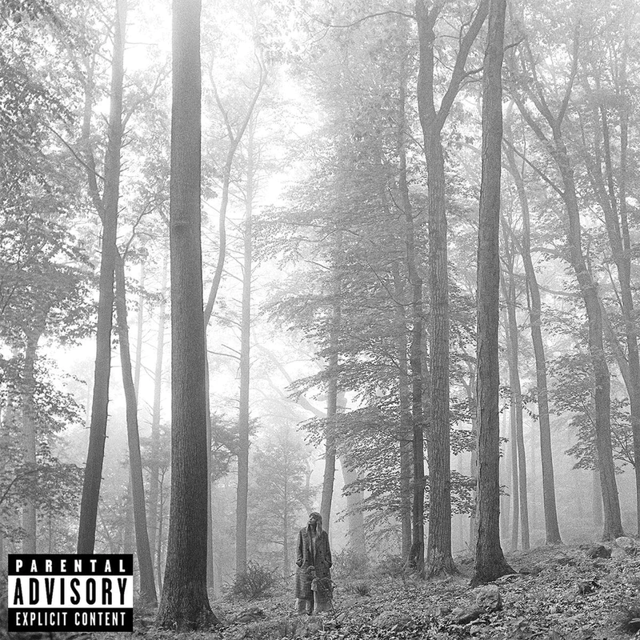

Some Taylor Swift's Albums

Red Taylor's version was released in 2021 and it has tracks like Red, 22, and All too well.

Folklore was released in 2020, in the middle of the global pandemy and it won a grammy.

Evermore was released in 2020, and it's a sister album of folklore. It has tracks like champagne problems.

Lover was released in 2019 and it's an album full of love, some political content and LGBT+ support.